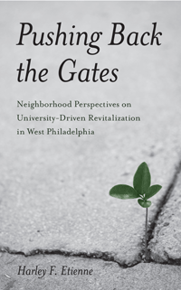

<body bgcolor="#FFFFFF" text="#000000" link="#0000FF" vlink="#CC0000" alink="#CC0000"><center><hr width="350" size="1" align="center" noshade>A critical study of university-driven development from the neighborhood resident's perspective<hr width="350" size="1" align="center" noshade><p><a href="https://cdcshoppingcart.uchicago.edu/Cart/ChicagoBook.aspx?ISBN=9781439900680&&PRESS=temple" target="_top">Buy this book!</a> | <a href="https://cdcshoppingcart.uchicago.edu/Cart/Cart.aspx?PRESS=temple" target="_top">View Cart</a> | <a href="https://cdcshoppingcart.uchicago.edu/Cart/Cart.aspx?PRESS=temple" target="_top">Check Out</a></p><p></p></center><!--none//--><h1>Pushing Back the Gates</h1>
<H2>Neighborhood Perspectives on University-Driven Revitalization in West Philadelphia</H2>
<h3>Harley F. Etienne</h3>
<P>cloth 1-4399-0068-X $60.50, Mar 12, <FONT COLOR=#990033>Available</FONT>
<br>paper 1-4399-0069-8 $25.95, <FONT COLOR=#990033>Available</FONT>
<br>Electronic Book 1-4399-0070-1 $25.95 <FONT COLOR=#990033>Available</FONT>
<BR> 192 pp
5.5x8.25
</P><BLOCKQUOTE><I>"</i>Pushing Back the Gates<i> is an outstanding book that breaks new ground. Etienne moves the discussion of the role of universities as agents of neighborhood revitalization to a new level. He has done an excellent job covering the critical issues, specifically by examining the role of the �entire� university in the revitalization of a distressed neighborhood. This book will become must reading for anyone interested in the role of universities in urban society."</I>
<BR>&#151<B>Henry Louis Taylor</B>, Jr. Professor of Urban and Regional Planning and Director of the Center for Urban Studies at the University of Buffalo</I></BLOCKQUOTE>
<P>As college and university administrators expand and develop their urban campuses, they have also become developers of neighborhoods�and primary drivers of change. But how do institutions contend with urban real estate needs, revitalization opportunities, and community outreach? And how do the residents benefit? <I>Pushing Back the Gates</I> provides a lively discussion of neighborhood-level perspectives of the dynamic changes brought about by institutions' urban planning efforts.
<P>Harley Etienne outlines the rationale for university-driven development and neighborhood revitalization balanced by caution for the limitations of the model. He provides a summary of the University of Pennsylvania's West Philadelphia Initiatives and the challenges and successes of this unique plan. Etienne also examines the implementation of similar efforts at different universities around the country.
<P><I>Pushing Back the Gates</I> speaks to communities, university leaders, and urban developers who navigate the boundary between neighborhood revitalization through physical development and investments in local communities and human capital.
<BR>&nbsp;<h2>Excerpt</h2><P>Excerpt available at <a href="http://www.temple.edu/tempress">www.temple.edu/tempress</a></p>
<BR>&nbsp;<h2>Reviews</h2>
<p><i>"Etienne has developed a nuanced and multi-dimensional understanding of gentrification, providing both the neighborhood perspective and an understanding of how universities can do a better job. </i>Pushing Back the Gates<i> is a thoughtful and very worthwhile book."</i><br><b>&#151Margaret Crawford</b>, Professor of Architecture, University of California, Berkeley
<p><i>"[A] case study...recommended for conception and questions raised.... Recommended."</i> <br>&#151<b><i>Choice</i></b>
<p><i>"Harley Etienne, in this compact but informative volume, outlines the reasoning behind university-driven development and neighborhood revitalization as university campuses expand.... The result is a meaningful contribution to the literature from which urban planners, policymakers, neighborhood organizers and city officials could profit."</i> <br>&#151<b><i>Journal of Urban Affairs</i></b> (online review)
<p><i>"By posing a challenge to one of higher education�s most revered models of university engagement, Etienne has opened the gates for ongoing study of this mostly unexamined yet critical area of activity."</i> <br>&#151<b><i>Academe</i></b>
<BR>&nbsp;<h2>Contents</h2><P>
<p>Preface
<br>Acknowledgments
<br>1. Cities and Their Universities: Logical Places to Search for Hope
<br>2. West Philadelphia, the University of Pennsylvania, and the Rough Road to Revival and Cooperation
<br>3. Early Returns on Dramatic Efforts to Change: The West Philadelphia Initiatives, 1990�2005
<br>4. The Dual Nature of Revitalization in the Twenty-First Century
<br>5. Comparative Views of Contemporary University-Driven Neighborhood Change
<br>6. Conclusion: Lessons from West Philadelphia
<br>Notes
<br>Bibliography
<br>Index
</P><BR>&nbsp;<H2>About the Author(s)</H2>
<P><b>Harley Etienne</b> is an Assistant Professor of Urban and Regional Planning in the Taubman College of Architecture and Urban Planning at the University of Michigan.</P>
<BR><H2>Subject Categories</H2>
<p><A HREF="/tempress/urban.html" TARGET="_top">Urban Studies</a>
<BR><A HREF="/tempress/political.html" TARGET="_top">Political Science and Public Policy</a>
<BR><A HREF="/tempress/sociology.html" TARGET="_top">Sociology</a>
</p>
<BR><h2 class="inpageheading">In the series</H2>
<P><I><a href="http://www.temple.edu/tempress/pvpv.html" onMouseOver="window.status='Click for other books in this series!'; return true;" onMouseOut="window.status=''; return true;" target="_top">Philadelphia Voices, Philadelphia Visions</a></i>, edited by David W. Bartelt.
</p><p>Philadelphia has always been a city that has embraced a richness of voice and vision, defying attempts to define it in a one-dimensional frame. Books in this series, <i>Philadelphia Voices, Philadelphia Visions</i>, edited by David W. Bartelt, will give voice to the diverse communities and perspectives that help define the city, and to address public issues that the city's community, civic and academic leadership raise in the public arena. The series is interdisciplinary, encompassing discussions of social divisions, cultural heterogeneity, and the importance of popular culture as expressions of communities that critique, celebrate, and continually reconstitute the Philadelphia region.</p>
<p align="center"><a href="https://cdcshoppingcart.uchicago.edu/Cart/ChicagoBook.aspx?ISBN=9781439900680&&PRESS=temple" target="_top">Buy this book!</a> | <a href="https://cdcshoppingcart.uchicago.edu/Cart/Cart.aspx?PRESS=temple" target="_top">View Cart</a> | <a href="https://cdcshoppingcart.uchicago.edu/Cart/Cart.aspx?PRESS=temple" target="_top">Check Out</a></p><p><font face="Arial" size="1"><a href="copyright.html" onMouseOver="window.status='Web Copyright Policy';return true;" onMouseOut="window.status=''" title="Web Copyright Policy">&copy;</a> 2015 <a href="http://www.temple.edu" target="new" onMouseOver="window.status='Link to Temple University home page';return true;" onMouseOut="window.status=''" title="Link to Temple University home page">Temple University</a>. All Rights Reserved. http://www.temple.edu/tempress/titles/2047_reg.html</font></p>